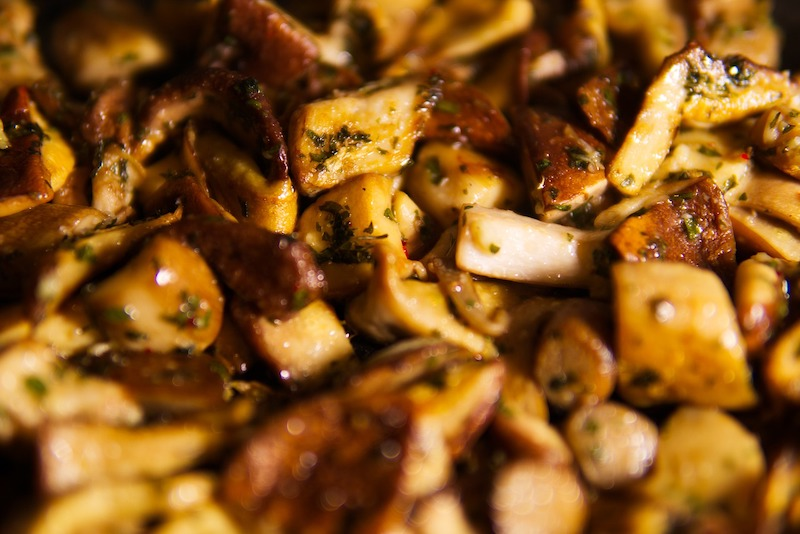

Sauteed Mushrooms

Description
This is a simple yet delicious recipe for a mushroom lover. All you need are butter, soy sauce, lemon, pepper, and your favorite mushrooms.
Ingredients
- Mushrooms of your choice (8 oz) -
For Cremini or button mushrooms, cut into half;
for a portobello mushroom, slice length-wise or half-length-wise;
for other mushrooms like oyster etc, split from stems for good bite sizes.
- Butter (1.5 tbsp)
- Soy sauce (1/2 tbsp)
- Garlic cloves (1 piece)
- Lemon juice (2 tbsp)
- Black pepper (dash)
- Optional fresh parsley (chopped 1/2 tbsp)
- Optional dried thyme (1 tsp)
Steps
- Wipe clean the mushrooms, and prepare them into the size mentioned above.
- Chop garlic.
- Heat a saute pan over medium heat, and put butter.
- When the butter started to melt, add the garlic.
- About 1 minute after adding garlic, add the mushrooms.
- Cook them for 5 to 6 minutes, or until the mushroom size shrinks slightly.
- Lower the heat to mid-low, and add soy sauce and black pepper, and mix well.
- Turn off the heat, and pour lemon juice over the mushrooms.
- Optionally, add parsley or thyme.
- Enjoy.